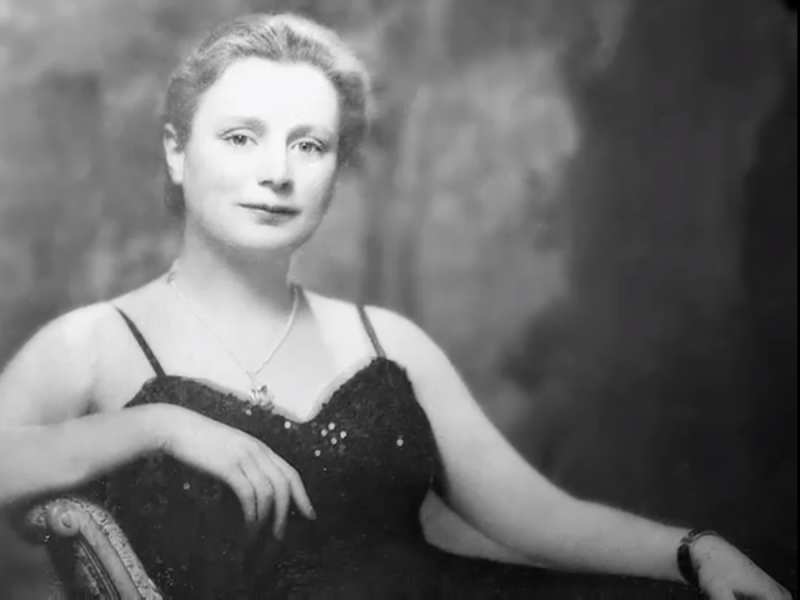
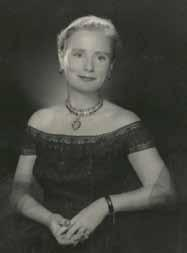
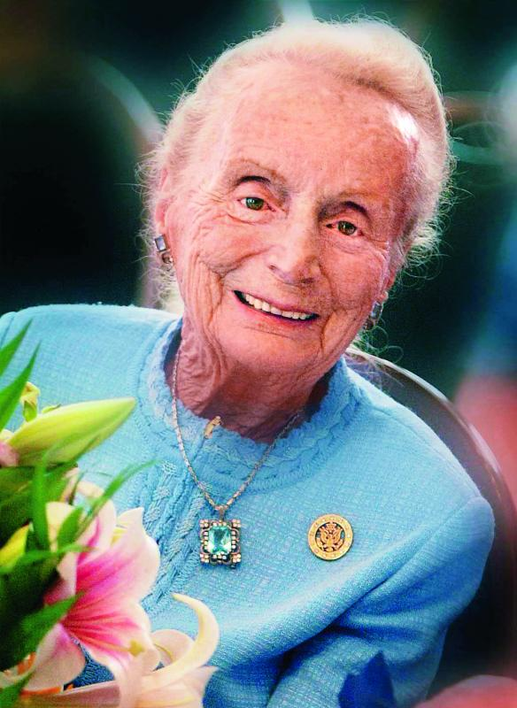
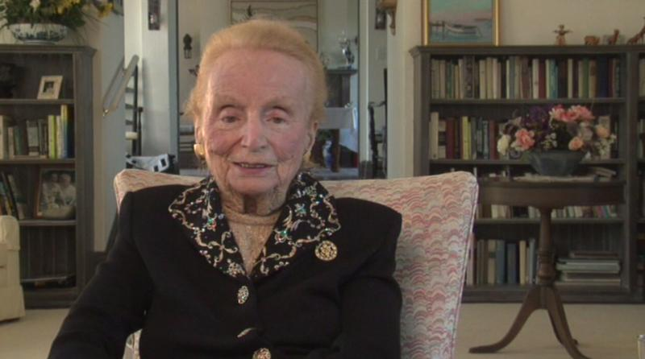

In Memoriam: Kathryn Wasserman Davis, Champion of Peace

Projects for Peace founder Kathryn Wasserman Davis died on April 23, 2013, at her home in Hobe Sound, Florida. An author, philanthropist, and scholar, she was 106 years old.
Davis challenged today’s students, whom she referred to as “the real movers and shakers,” to do what previous generations could not—to work effectively toward lasting peace in the world. “There will always be conflict,” she noted. “But I’ll remind you that love, kindness, and support are also part of human nature. My challenge to you is to bring about a mindset of preparing for peace instead of preparing for war.”
“She did not stand by and watch,” says Ronald D. Liebowitz, former president of Middlebury College, headquarters for Projects for Peace. “Mrs. Davis demonstrated her commitment to the cause of peace by becoming a true champion of international education and force for the greater good.”
After the terrorist attacks of 2001, Davis turned her philanthropic mission toward her vision for world peace and, in recognition of her efforts, received the 2006 Woodrow Wilson Award for Public Service from the Wilson Center in Washington, D.C., and the EastWest Institute’s Peace and Conflict Prevention Award conferred in Potsdam, Germany. That same year, looking ahead to her 100th birthday in 2007, she created 100 Projects for Peace to increase global understanding and promote peace. Since its founding, Projects for Peace has funded more than 700 projects in more than 100 countries.
An explorer of far-off places throughout her life, the adventurous Davis first visited Russia in 1929, traveling through the Caucasus Mountains on horseback with famed anthropologist Leslie White. The dangerous journey included a run-in with bandits who stole the group’s food and horses.
“We ate wild berries for breakfast and spit-roasted mountain goat for dinner,” she told the Moscow Times in 2002. “And I couldn’t have been happier.” During her lifetime she returned to Russia more than 30 times, deepening her passion for its people, history, and culture and developing friendships that included former Soviet President Mikhail Gorbachev, who was her dinner partner at her 95th birthday party.
Some people think Russian studies aren’t important anymore—don’t ask me why!” Davis said in 1998. “The more people know each other, the better, and this is what I am hoping will happen. And hopefully that will lead to world peace, which is my main goal.”
Born in Philadelphia on February 25, 1907, Davis was educated at Miss Madeira’s School in Washington, D.C. She received a bachelor’s degree from Wellesley College, a master’s degree in International Relations from Columbia University, and a doctorate from the University of Geneva, Switzerland. She also holds honorary doctorates from Middlebury College, Columbia University, and Wheaton College.
In 1934, her doctoral thesis, “The Soviets in Geneva,” was published and became a best-selling book in Europe when her controversial prediction that the Soviet Union would join the League of Nations proved both timely and correct. She went on to write numerous articles on foreign affairs in publications ranging from the Readers Digest to The United States in World Affairs, published annually by the Council on Foreign Relations. In addition to her articles, she was a frequent and engaging lecturer before educational and civic groups in the United States, India, Russia, China, and Switzerland.
It was a shared interest in world affairs that first drew her to her husband of 62 years, the late Shelby Cullom Davis, who founded the investment firm that bears his name in 1947 and was ambassador to Switzerland from 1969 to 1975.
The couple met on a train headed for Geneva in 1930 and discovered they had both recently traveled in Russia. After returning to New York and completing master’s degrees at Columbia University, and following a courtship at International House where they both resided, they were married on January 4, 1932. They returned to Switzerland, first to complete their doctorates in 1934 and then again during the years that Mr. Davis served as ambassador.
After her husband’s death in 1994, Davis dedicated herself to philanthropy, primarily focusing on education and international affairs but also embracing a wide range of other causes. She was devoted to her alma mater, Wellesley College, serving on its board for many years and supporting numerous projects including financial aid for students, global education initiatives, professorships in Russian, Slavic and Asian Studies, and the creation of The Davis Museum and Cultural Center.
Her other philanthropic investments included: scientific research in genetics, glaucoma, and regenerative medicine; education for recent immigrants at community colleges; Planned Parenthood; master’s programs at the American Museum of Natural History and Future Generation’s Graduate School; and numerous organizations in the communities where she lived.
Although she wrote and lectured on her travels throughout the world, Russia and the Soviet Union remained a lifelong passion. In 1996, this passion was memorialized when Harvard’s Russian Research Center was named in honor of her and her late husband, Shelby Cullom Davis. In 2006, Middlebury College named the Russian School, part of its renowned Language Schools, for Kathryn Wasserman Davis. That same year, Davis created the Fellowships for Peace program at Middlebury, to cover the full cost of attendance in the Middlebury Language Schools.
Other institutions bearing the names of Kathryn and Shelby Cullom Davis include: the Davis Center for Russian and Eurasian Studies at Harvard University; the Shelby Cullom and Kathryn Davis International Center at Princeton University; Princeton, Columbia and Trinity College professorships in history, economics and international affairs; the Davis Institute for International Studies at the Heritage Foundation; Kathryn and Shelby Cullom Davis Hall at International House-New York; libraries at Bradley University and the Tobin School of Business at St. John’s University; the Kathryn W. Davis Center for International and Regional Studies at the College of the Atlantic; the Kathryn W. Davis Student Center at the United World College-USA; and the Shelby and Kathryn Davis Library at the Graduate Institute in Geneva, Switzerland.

In 1998, at the age of 91, she took up kayaking, making regular excursions on the Hudson River and along the coast and lakes of Maine. As a result of these experiences, she became a significant supporter of environmental organizations, including Scenic Hudson and the Maine Coast Heritage Trust.
Davis was a member of the Council on Foreign Relations, the Council of American Ambassadors, the New York Stock Exchange, and the Visiting Committee of the Davis Center at Harvard. She was a Wellesley College trustee for 18 years and later a trustee emerita. In addition, she served as a distinguished trustee at the United World College-USA, an honorary trustee at the Heritage Foundation, trustee emerita at The Youth Foundation, on the advisory board of Seeds of Peace, and as a decades-long officer and trustee of the Women’s National Republican Club.
Davis is survived by her daughter, Diana Davis Spencer of Washington, D.C.; her son, Shelby M.C. Davis of Jackson, Wyoming; eight grandchildren; and 11 great-grandchildren.